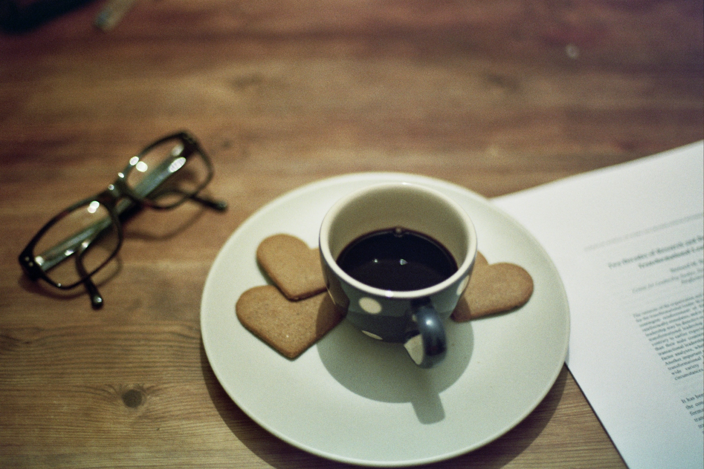
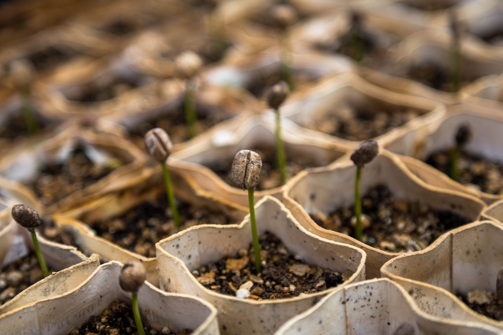
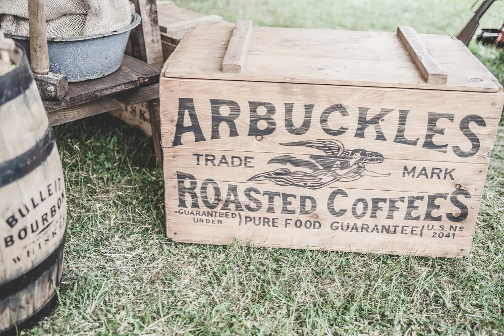

Современному человеку трудно представить свой день без чашечки ароматного кофе. А ведь еще в начале XVII века в Европе его продавали только в аптеках. Расскажем больше об этом легендарном напитке.
Кофе всегда был любимым напитком музыкантов, поэтов и мыслителей. К примеру, Оноре де Бальзак спокойно мог выпить до 60 чашек кофе в день. Столь же фанатичным было пристрастие Вольтера, который выпивал по 50 чашек бодрящего напитка в день. До сих пор ведутся споры относительно влияния кофе на организм человека. Внутри кофейного зернышка содержится больше двух тысяч химических веществ, из которых изучена всего половина. Так что впереди еще много новых открытий.
Поговорим о пользе:
Кофеин оказывает возбуждающий эффект на центральную нервную систему. Именно поэтому чашка кофе с легкостью справляется с сонливостью и головной болью, к тому же является прекрасным антидепрессантом (благодаря содержащемуся в нем гормону счастья серотонину).
Если вы вдруг не знали, то кофе — это еще и афродизиак: кофеин стимулирует участок головного мозга, отвечающий за половое возбуждение. Так что не ленитесь баловать своих любимых чашечкой кофе в постель.
Умеренное потребление этого напитка (до двух чашек в день) — эффективная профилактика кариеса, желчекаменной болезни, диабета, инфаркта, атеросклероза и многих других заболеваний.

Немного истории
История происхождения кофе началась за много лет до нашей эры в провинции Кафа (Эфиопия, Восточная Африка). Согласно одной из многочисленных легенд, эфиопский пастух был поражен активным поведением своих коз после жевания ярко-красных плодов кофейного дерева. Тогда пастух решил сам отведать ягод. Видимо, они пришлись ему по вкусу, ведь вскоре кофе стал излюбленным напитков арабов.
До XVII века кофе выращивали главным образом на Аравийском полуострове. Долгое время экспорт плодородных (необжаренных) зерен был запрещен — чтобы не допустить их культивирования на других территориях. Но в 1616 году голландцам удалось-таки контрабандой вывезти несколько живых зерен. В дальнейшем они начали их выращивать в своих колониях в Индии и Индонезии (на сегодняшний день эта местность является четвертым по величине экспортером кофе в мире).
Сегодня кофе — это один из наиболее ценных товаров в мировой торговле, который по своему значению уступает лишь нефти.

Сорта кофе
Промышленное значение имеют два основных вида кофейных деревьев: арабика и робуста.
Арабика обладает мягким вкусом и тонким насыщенным ароматом. Произрастает в высокогорных местностях (от 600 м над уровнем моря). На ее долю приходятся три четверти мирового производства кофе.
Робуста менее зависима от условий произрастания (плантации располагаются на нижних частях склонов). В то же время она уступает арабике по вкусовым качествам: ее вкус более крепкий, немного горьковатый и вяжущий. К тому же этот сорт содержит вдвое больше кофеина.
Как правило, в магазинах представлены смеси обоих сортов, собранные в различных пропорциях. Это и дает разнообразие вкуса и аромата.

Степень прожарки
Из одних и тех же зерен в процессе обжаривания можно получить кофе различных вкусовых оттенков. Существует несколько степеней обжаривания:
легкая (скандинавская),
средняя (венская),
сильная (французская),
самая интенсивная (итальянская).
Считается, что чем дольше длится термическая обработка, тем более активно выделяются эфирные масла. Соответственно, и вкус является более насыщенным, с ярко выраженной горчинкой.

Способы приготовления
Существует множество рецептов заваривания кофе на любой вкус.
Кофе по-восточному (по-турецки)
1 ч. л. мелко молотого кофе засыпьте в турку и залейте половиной стакана холодной воды. Варите на медленном огне, не перемешивая. Как только начнет подниматься кофейная пена, снимите с огня и, не процеживая, разлейте по чашкам. Кофе по-турецки принято подавать со стаканом холодной воды, глоток которой помогает почувствовать все тонкости кофейного вкуса.
Кофеварка гейзерного типа
Очень распространен в Италии. Такой прибор состоит из трех секций. В нижний заливается вода, в средний кладут кофе, сверху конденсируется готовый напиток. Вода закипает, горячий пар поднимается через гейзер и проходит через слой кофе в верхний резервуар. Кофе получается крепким и насыщенным.
Компрессионная кофеварка (эспрессо-машина)
В эспрессо-машине кофе готовится меньше минуты — достаточно нажать одну кнопку. Принцип действия основывается на прохождении пара под большим давлением через спрессованный кофе мелкого помола.